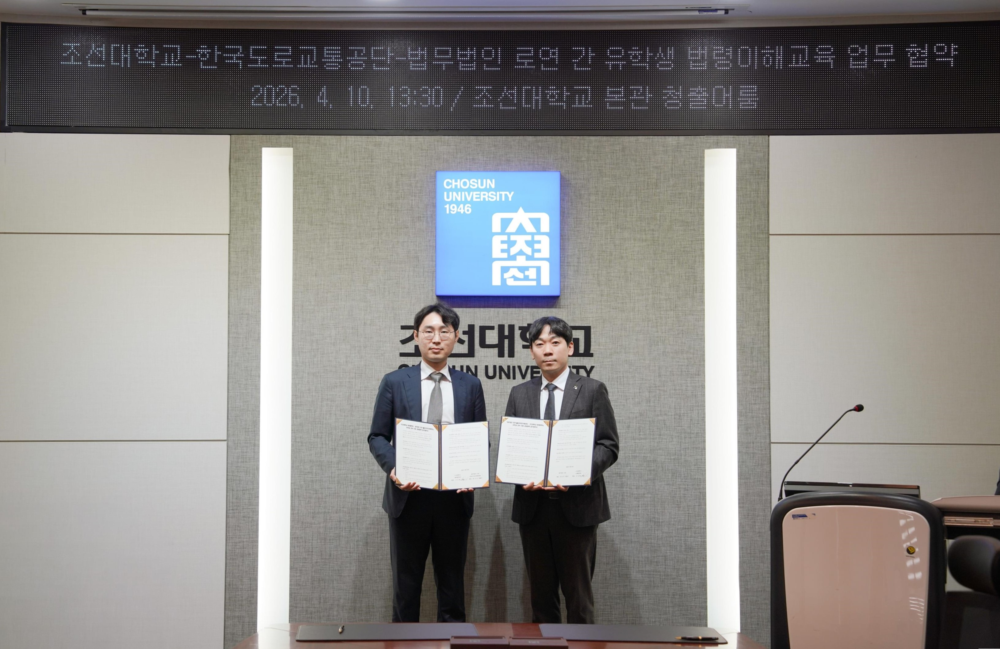
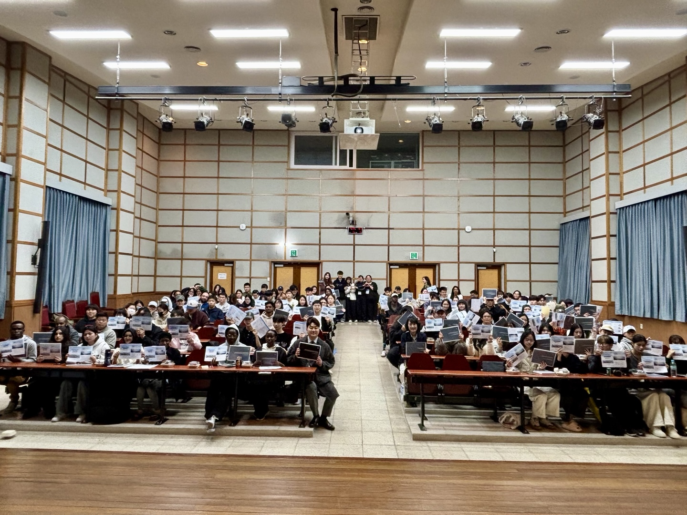
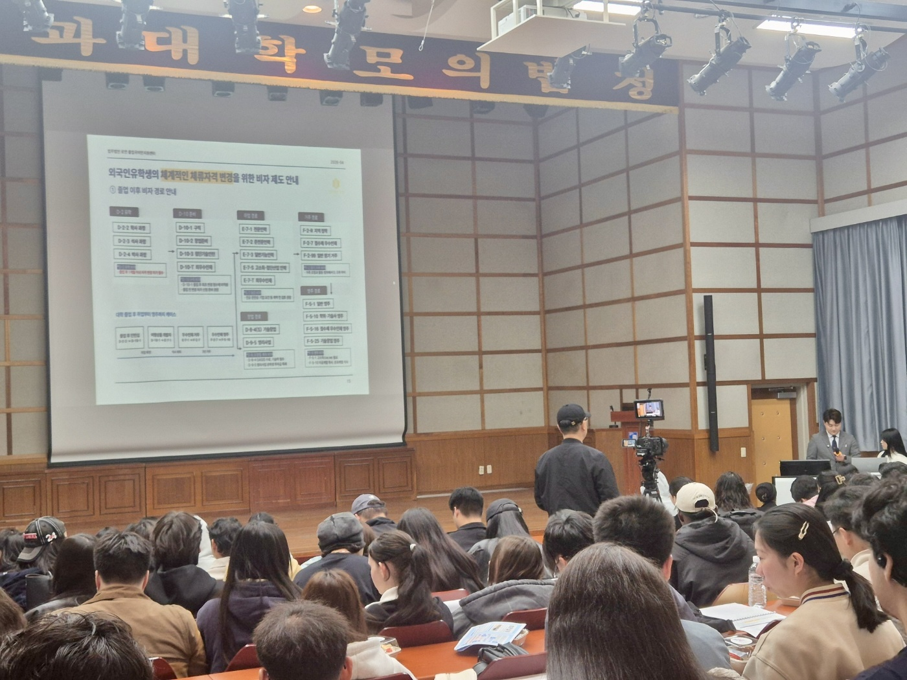

업무 협약 체결
2026년 4월 10일, 법무법인 로연 출입국이민지원센터는 조선대학교 대외협력처와 외국인 유학생의 안정적인 유학 생활 지원을 위한 업무 협약을 체결하였습니다.
이번 협약은 외국인 유학생이 학업에 전념할 수 있도록, 한국에서 생활하며 마주하게 되는 법률·체류 관련 사안을 전문적으로 지원하는 것을 목적으로 합니다. 양 기관은 유학생 대상 법령 교육과 비자 변경을 포함한 법률 지원에 협력하기로 하였습니다.

협약의 주요 내용
이번 업무 협약을 통해 양 기관은 외국인 유학생의 안정적인 유학 생활을 위하여 다음과 같은 분야에서 협력합니다.
한국 법령 특강 진행
협약 체결 당일에는 조선대학교 재학 외국인 유학생을 대상으로 한국 법령 특강이 함께 진행되었습니다.
특강에서는 유학생이 졸업 후 선택할 수 있는 비자 경로를 안내하고, 출입국관리법을 포함한 한국 법령의 핵심 내용을 다루었습니다. 재학 중 유의해야 할 체류 자격 관리부터 졸업 이후의 진로에 따른 체류자격 변경까지, 유학생이 실제로 마주하게 되는 절차를 중심으로 설명하였습니다.


졸업 후 비자 경로와 출입국관리법을 포함한 한국 법령 특강 (2026.04.10)
앞으로의 지원
법무법인 로연 출입국이민지원센터는 이번 협약을 계기로 조선대학교 외국인 유학생이 한국에서 안정적으로 학업과 진로를 이어갈 수 있도록 법령 교육과 비자·체류 관련 법률 지원을 지속해 나갈 예정입니다.
외국인 유학생의 졸업 후 진로 설계와 체류자격 변경에 관한 사안은 경험 많은 변호사와 출입국 전문 인력이 함께 지원합니다.